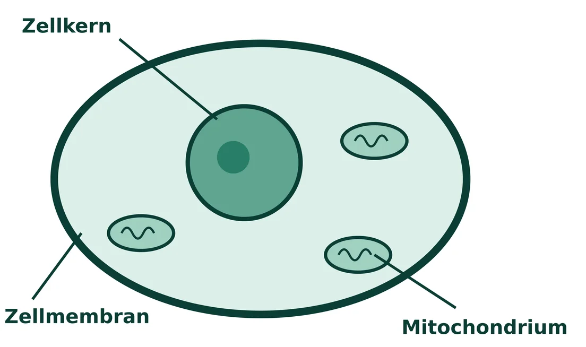
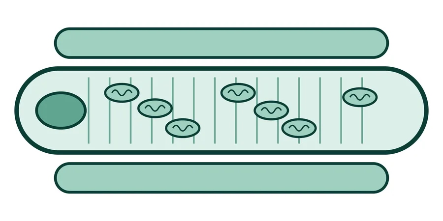
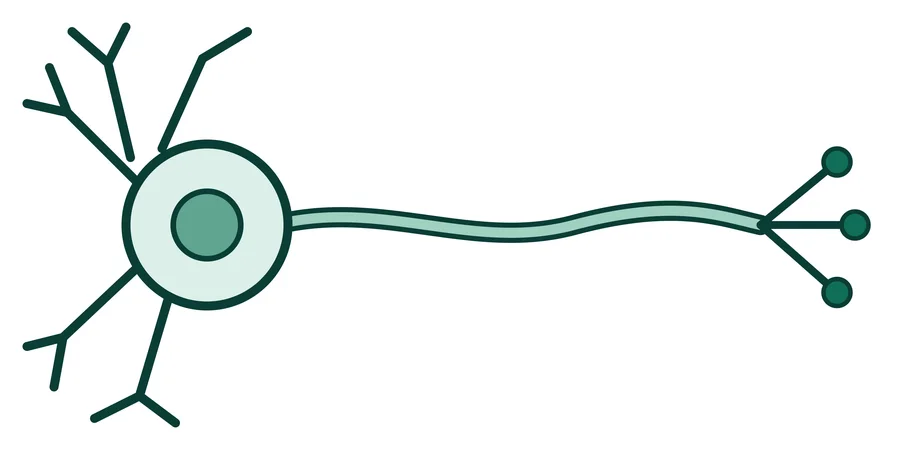
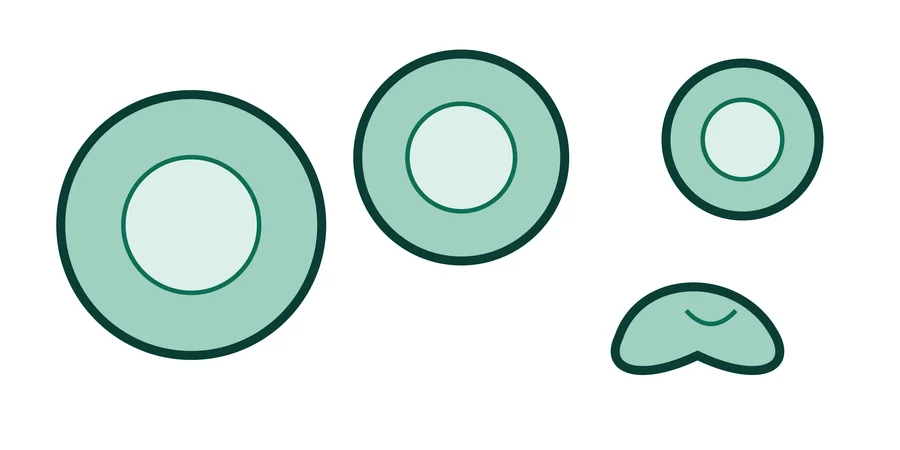

Einstieg · Do Now · Wiederholung
Aufgabe:
Beschreibe die Aufgabe von Zellkern, Zellmembran und Mitochondrium in je einem Satz.

Einstieg · Do Now · Abgleich
Antippen: Lösung
Enthält die Erbsubstanz und steuert die Zelle.
Antippen: Lösung
Umgibt die Zelle und regelt, was hinein und hinaus gelangt.
Antippen: Lösung
Stellt durch die Zellatmung Energie für die Zelle bereit.
Einstieg · Impuls
Freiwillige: Bildet eine Kette: Hand in Hand, Arme seitlich ausgestreckt. Beim Signal winkeln alle gleichzeitig die Arme an.
Alle anderen: Beschreibe, was du bei der Kette beobachtest.
Zum Nachspielen: Knopf rechts drücken.
Einstieg · Impuls



Bilder: eigene schematische Zeichnungen, frei verwendbar.
Einstieg · Fragenentwicklung
Differenzierung · Rollenkarten
Rollenkarte mit Bau und Funktion in 3 Kurzsätzen. Satzbausteine helfen beim Begründen.
Rollenkarte mit Bau, Vorkommen und Besonderheit. Du erschließt die Funktion selbst. Begründe mit Satzanfängen.
Rollenkarte nur mit Bau und Vorkommen: Erkläre, welche Funktion zu diesem Bau passt. Zusatz: Buch S. 25, M1, Aufgabe 5.
Erarbeitung 1 · Vorstellungsrunde
Aufgabe:
Beschreibe deinem Team Bau und Funktion deiner Zelle.
Ein Team hat 4 Personen und 4 Rollenkarten. Jede Person hat einen anderen Zelltyp.
Erarbeitung 2 · Stellenbörse
Ordne jede Anzeige dem passenden Zelltyp zu. Begründe mit dem Bau der Zelle.
Gesucht: Transportzellen für sehr enge Gefäße. Sie müssen winzig sein und innen viel Platz für ihre Fracht lassen.
Gesucht: Zellen für eine Fernverbindung. Sie sollen Informationen vom Rückenmark bis zum großen Zeh übermitteln.
Gesucht: Zellen für den Oberarm. Sie müssen sich verkürzen können und dabei viel Energie umsetzen.
Gesucht: Zellen für die Außenseite des Körpers. Sie sollen wie ein Dach dicht zusammenschließen.
Satzbausteine: Die Anzeige passt zu …, weil die Zelle … ist / … hat.
Sicherung · Steckbriefe
Tippe eine Karte an, um Bau und Funktion zu sehen.
Bau: lang gestreckt, sehr viele Mitochondrien
Funktion: zieht sich zusammen und setzt viel Energie um
Bau: lange, dünne Fortsätze (bis 1 m)
Funktion: leitet Informationen weiter
Bau: winzig, scheibenförmig, ohne Zellkern, sehr verformbar
Funktion: transportiert Sauerstoff
Bau: flach, dicht gepackt, fest verbunden
Funktion: schützt die Körperoberfläche wie ein Dach
Erarbeitung 3 · Warum Spezialisten?
Aufgabe:
Erkläre, warum der Körper Spezialisten braucht und nicht lauter gleiche Zellen, die alles können.
Produkt: 1–2 Sätze. Ein Teammitglied trägt sie vor.
Arbeitsteilung · Aufgabe · Bau · Gewebe · spezialisiert
Spezialisierte Zellen …, weil …
Buch S. 25, M1, Aufgabe 5
Sicherung · Ebenenleiter
Ordne die Begriffe den Ebenen zu.
Beispiel: Muskel. Jedes Wort passt zu genau einer Ebene.
Sicherung · Merksatz
Wortspeicher:
Sicherung · Modellkritik
Vergleiche die Gewebekette vom Anfang mit einem echten Muskelgewebe. Nenne, was das Modell richtig zeigt und was nicht.
Exit · Blitzabstimmung
Exit · Blitzabstimmung
Exit · Blitzabstimmung
Vertiefung · Weiterdenken (Geografie)
Im Himalaya oder in den Anden ist die Luft dünn. Mit jedem Atemzug nimmt der Körper weniger Sauerstoff auf.
Wer längere Zeit in großer Höhe ist, bildet nach einiger Zeit mehr rote Blutzellen. Deshalb trainieren manche Sportlerinnen und Sportler im Hochgebirge.
1Erkläre, warum mehr rote Blutzellen in großer Höhe helfen.
2Nenne zwei Schwierigkeiten, die das Leben im Hochgebirge für Menschen mit sich bringt.
Reflexion · Selbsteinschätzung
Tippe an, wie sicher du dich fühlst. Das ist nur für dich.